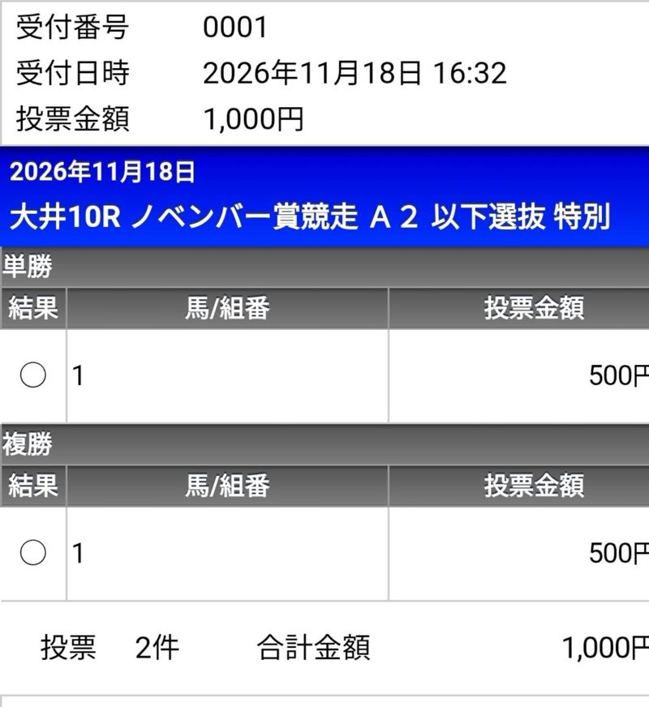

前日成績
11/17 大井11R トパーズ賞 ◎13 フルムは4着でした。3着とはハナ差で、単勝・複勝ともハズレ、1,000円→0円です。
当日予想
2026/11/18(水) 大井10R ノベンバー賞（A2以下選抜特別）
19:30発走、ダート1200m、12頭立てです。
◎1 マスターオブライフ 御神本訓史
１ 単勝 ５００円
１ 複勝 ５００円
大井1200mでは近5走が3着・1着・1着・1着・2着と崩れていません。前走は格上のオープン特別（アフター5スター賞）で3着でした。不良馬場でも勝ち鞍があり、今日の不良馬場も合います。約2か月半ぶりと57kgは割り引き材料ですが、単複で手堅くいきます。

＜本年成績＞
中央 213戦26勝 291,400円→181,380円 -110,020円 62%
地方 11戦3勝 11,000円→13,600円 +2,600円 124%
払戻"金"投資 108,020円→95,608円 -12,412円 -11.49%
その他の予想（予想だけ・買っていません）
大井11R ハイセイコー記念（2歳重賞）20:10発走、ダート1600m
◎1 ケテンパッション 笹川翼 単勝 ５００円／複勝 ５００円（仮想）
大井1600mは2戦2勝で、5戦すべて3着以内です。近3年の勝ち馬はいずれも1番人気で、人気馬が堅い重賞です。
大井12R 猫又坂賞（B3）20:50発走、ダート1400m
◎3 サイカンサンユウ 安藤洋一 単勝 ５００円／複勝 ５００円（仮想）
大井1400mは4戦4勝で目下3連勝中、不良馬場の勝ち鞍もあります。B3昇級初戦だけが課題です。